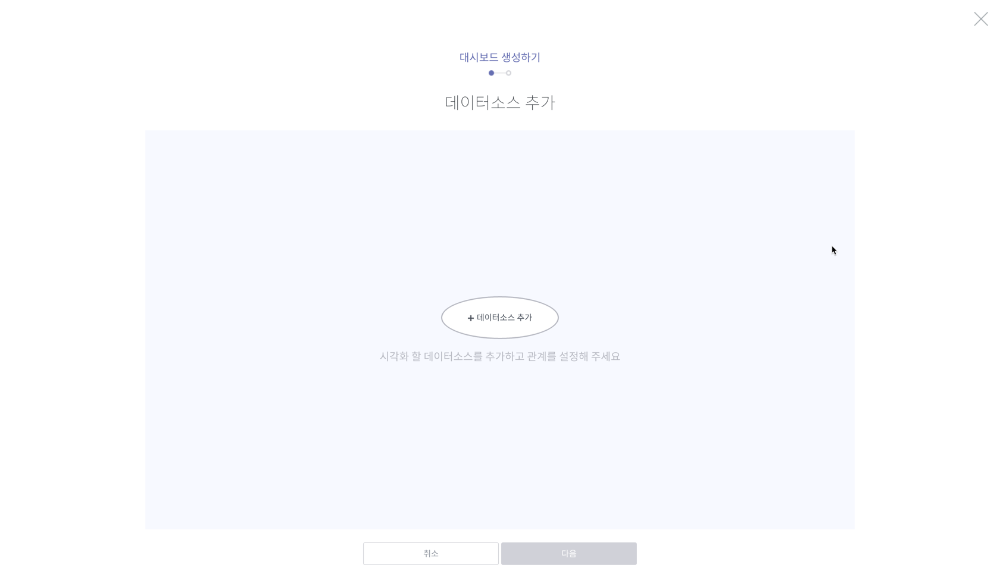
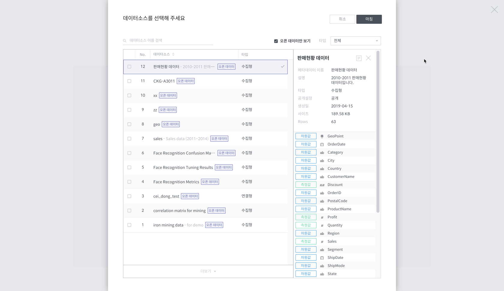

Step2. 워크북 만들기¶
분석을 위한 데이터가 준비되었나요? 그럼 이제 워크북을 만들 차례입니다. 워크북은 데이터 시각화 기능을 포함하는 모듈입니다. 좌측 상단의 Metatron Discovery 로고를 클릭하면 메인 화면인 내 개인 워크스페이스로 이동합니다.

우측 하단의 + 워크북 버튼을 눌러 워크북을 만들어 볼까요? 만들 워크북의 이름과 설명을 입력합니다. 워크북을 만드는 즉시 이어서 대시보드를 만들도록 체크박스에 표시가 되어 있습니다. 여기서 각 워크북은 여러 개의 대시보드를 포함하고, 각 대시보드는 또 여러 개의 차트를 포함하는 구조입니다.

이어서 대시보드를 만들어야 합니다. 대시보드에는 시각화할 데이터 소스가 있어야 합니다. 이 데이터 소스는 단일 소스이거나, join으로 연결된 데이터 소스일 수도 있습니다. 더 자세한 내용은 대시보드 만들기 문서를 참고하세요. 본 튜토리얼에서는 Step1에서 적재한 판매현황 데이터 하나만 사용합니다.

+데이터 소스 추가 버튼을 누르면 데이터 소스 선택 팝업이 나타납니다. 판매현황 데이터를 검색하거나 오픈 데이터만 보기에 체크하여 공개된 데이터 중에서 찾아냅니다.

마지막으로 대시보드의 이름과 설명을 입력합니다.

워크북 내에 대시보드가 생성되었습니다! 이제 이 위젯들을 추가해서 대시보드를 구성하는 일만 남았네요.

다음 단계로 넘어가 볼까요?